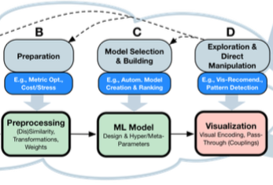

What You See Is What You Can Change: Human-Centered Machine Learning By Interactive Visualization

Authors. Dominik Sacha, Michael Sedlmair, Leishi Zhang, John A Lee, Jaakko Peltonen, Daniel Weiskopf, Stephen C North, Daniel A Keim
Venue. Neurocomputing (2017)
Abstract. Visual analytics (VA) systems help data analysts solve complex problems interactively, by integrating automated data analysis and mining, such as machine learning (ML) based methods, with interactive visualizations. We propose a conceptual framework that models human interactions with ML components in the VA process, and that puts the central relationship between automated algorithms and interactive visualizations into sharp focus. The framework is illustrated with several examples and we further elaborate on the interactive ML process by identifying key scenarios where ML methods are combined with human feedback through interactive visualization. We derive five open research challenges at the intersection of ML and visualization research, whose solution should lead to more effective data analysis.